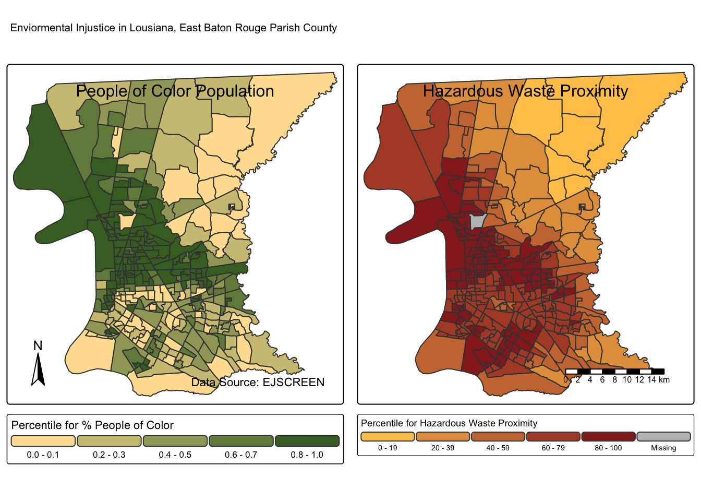
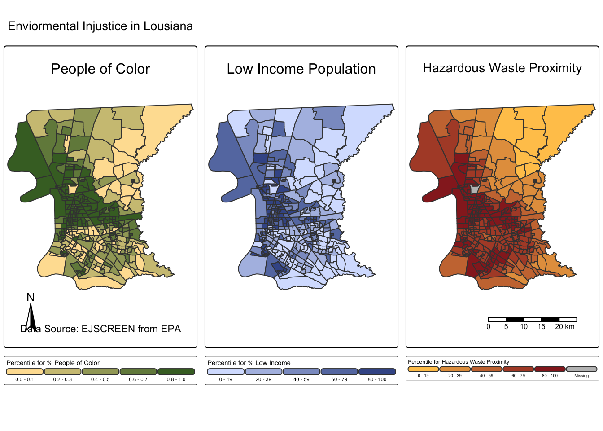

# Load libraries
library(sf) # for vector data (more soon!)
library(stars) # for raster data (more soon!)
library(tmap) #or static and interactive maps
library(here)ej_sceen1
HW1: Exploring Environmental Injustice
Loading libraries
Downloading Data
EjScreen All Data -> LA, East Baton Rouge Parish County
#Setting up data: filtering for Louisiana, East Baton Rouge Parish County
# read in geodatabase of EJScreen data at the Census Block Group level
ejscreen <- sf::st_read(here::here("data", "ejscreen","EJSCREEN_2023_BG_StatePct_with_AS_CNMI_GU_VI.gdb"))
# filter to a state you are interested in: Lousiana
LA <- ejscreen %>%
dplyr::filter(ST_ABBREV == "LA")
# filter to a county you are interested in: East Baton Rouge Parish
EBRP_LA <- ejscreen %>%
dplyr::filter(CNTY_NAME %in% c("East Baton Rouge Parish"))
# find the average values for all variables within counties
LA_counties <- aggregate(LA, by = list(LA$CNTY_NAME), FUN = mean, na.rm=TRUE)Making maps
Main Map
People of color Map
Hazardous Waste Proximity Map
This map illustrates the relationship between predominantly People of Color communities and their proximity to hazardous waste sites in East Baton Rouge Parish, Louisiana. The state, especially in the Baton Rouge area and around the Mississippi River, has a long history of weak regulations of petrochemical industries and fossil fuels, highlighting the environmental racism and systemic inequities (Antonia Juhasz, 2024). Within East Baton Rouge Parish, communities of Color are concentrated in the central region where they are disproportionately situated near hazardous waste sites, displaying ongoing environmental injustice.
# People of Color Map
pcol <- tm_shape(EBRP_LA) +
tm_polygons(fill = 'PEOPCOLORPCT', #filling with the PofC column
fill.legend = tm_legend(title = "Percentile for % People of Color",
orientation = "landscape"),
fill.scale = tm_scale(values = c("#FEE0A1", "#456D2D"))) +
tm_title_in('People of Color Population', position = tm_pos_in("center", "top"), size = 1) +
tm_layout(main.title = "Enviormental Injustice in Lousiana, East Baton Rouge Parish County ", main.title.size = 1.5) +
tm_compass(position = c("left", "bottom")) +
tm_credits("Data Source: EJSCREEN",
position = c("right", "bottom"))
# Hazardous Waste Proximity Map
phw <- tm_shape(EBRP_LA) +
tm_polygons(fill = 'P_PTSDF', # filling wth HWP column
fill.legend = tm_legend(title = "Percentile for Hazardous Waste Proximity",
orientation = "landscape"),
fill.scale = tm_scale(values = c("#FFC759", "#962525"))) +
tm_title_in('Hazardous Waste Proximity', position = tm_pos_in("center", "top"), size = 1) +
tm_layout(main.title = " ", main.title.size = 1.5) +
tm_scalebar()
# Using `tmap_arrange` to put maps together in 1 layout
map_final <- tmap_arrange(pcol, phw, ncol = 2)
map_final
# Saving the Map
tmap_save(map_final, here::here("figs", "envir_injust_main_map.jpg"), width = 10, height = 7)The Other Map
# % People of Color Map
peopcolor <- tm_shape(EBRP_LA) +
tm_polygons(fill = 'PEOPCOLORPCT',
fill.scale = tm_scale(values = c("#FEE0A1", "#456D2D")),
fill.legend = tm_legend(title = "Percentile for % People of Color",
orientation = "landscape")) +
tm_title_in('People of Color', position = tm_pos_in("center", "top"), size = 1) +
tm_layout(main.title = "Enviormental Injustice in Lousiana", main.title.size = 1) +
tm_compass(position = c("left", "bottom")) +
tm_credits("Data Source: EJSCREEN from EPA",
position = c("right", "bottom"))
# % Low Income Map
low_income <- tm_shape(EBRP_LA) +
tm_polygons(fill = 'P_LOWINCPCT',
fill.scale = tm_scale(values = c("#D6E1FE", "#415896")),
fill.legend = tm_legend(title = "Percentile for % Low Income",
orientation = "landscape")) +
tm_title_in("Low Income Population", position = tm_pos_in("center", "top"), size = 1) +
tm_layout(main.title = " ", main.title.size = 1)
# % Hazardous waste proximity
sfp <- tm_shape(EBRP_LA) +
tm_polygons(fill = 'P_PTSDF',
fill.scale = tm_scale(values = c("#FFC759", "#962525")),
fill.legend = tm_legend(title = "Percentile for Hazardous Waste Proximity",
orientation = "landscape")) +
tm_layout(main.title = " ", main.title.size = 1) +
tm_title_in("Hazardous Waste Proximity", position = tm_pos_in("center", "top"), size = 1) +
tm_scalebar()
# Using `tmap_arrange` to put maps together in 1 layout
map <- tmap_arrange(peopcolor, low_income, sfp, ncol = 3)
map
# Saving the Map
tmap_save(map, here::here("figs", "envir_injust_other.jpg"), width = 10, height = 5.5)CITATIONS
Antonia Juhasz. (2024). “We’re Dying Here.” Human Rights Watch. https://www.hrw.org/report/2024/01/25/were-dying-here/fight-life-louisiana-fossil-fuel-sacrifice-zone
United States Environmental Protection Agency. EJScreen: Environmental Justice Screening and Mapping Tool. **(this does not exist anymore, so it’s hard to cite it)**